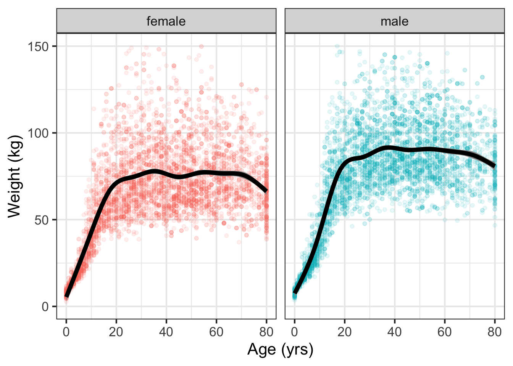
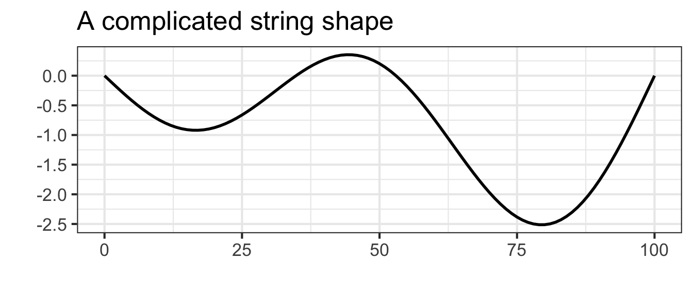
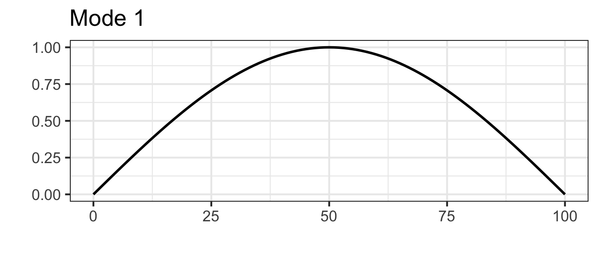
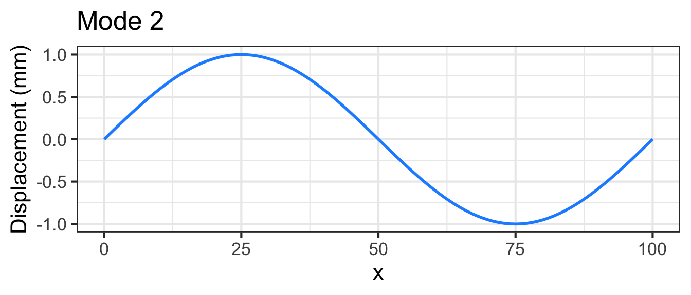
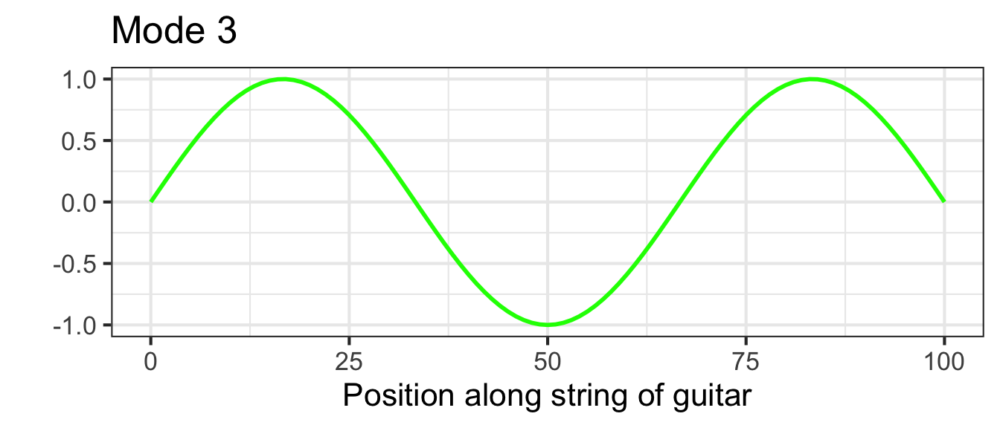

10 Functions with multiple inputs
Section 4.2 showed how to construct contour plots of functions taking two inputs. Let’s consider an example to motivate why functions taking multiple inputs are important.
Figure 10.1 shows a biological phenomenon with which we are all familiar. There are 10,000 dots, each of which corresponds to a person selected randomly from the US population. The black lines show a model function fitted to the data by methods to be presented in Section 16.7.
NHANES data frame showing weight against age for 10,000 individuals. A model function (black) fitted to the data is also shown.
We all know that children tend to get heavier as they age through childhood and puberty. It’s also true that adult women tend to be lighter than adult men, at least for those over 18 years old. The model function in Figure 10.1 takes two inputs: age and gender.
It’s also true that humans differ in weight for reasons beyond age and sex. For example, health condition affects weight, as does height, skeletal size, caloric intake, and energy expenditure, among other factors. A more complete model of weight could take such factors into account, becoming a model taking multiple inputs. Such multi-input model functions are often constructed from data using the fitting techniques you will meet in Section 16.7.
Especially in science and engineering, many functions are described by formulas. Consider, for instance, the gravitational force \(F_g\) on an object such as a automobile or person. Since Isaac Newton’s time, we have known that this force is determined by the mass of the Earth, the mass of the object, and the distance of the object from the center of the Earth, that is, three inputs:
\[F_g(M_\text{Earth}, M_\text{object}, \text{dist}) \equiv \frac{G M_\text{Earth} M_\text{object}}{\text{dist}^2} \tag{10.1}\]
\(G\) is a parameter called the “universal gravitational constant”: \(G = 6.6743 \times 10^{-11} \text{m}^3 \text{kg}^{−1} \text{s}^{−2}\). Thinking about the construction of Math expression 10.1 as a combination, it is a multiplication of two functions, \(g_1(x) \equiv x\) and \(g_2(x) \equiv x^{-2}\), that is,
\[F_g(M_\text{Earth}, M_\text{object}, \text{dist}) \equiv G \times g_1(M_\text{Earth}) \times g_1(M_\text{object}) \times g_2(\text{dist}) \tag{10.2}\]
It happens that the function \(g_1()\) plays two roles in \(F_g()\), once with \(M_\text{Earth}\) as the input and again with \(M_\text{object}\) as the input. This use of construction by function multiplication is common in formulas. When the functions being multiplied take different inputs, the overall function becomes one that takes multiple inputs.
10.1 Linear combinations
In other areas of quantitative work, especially where there is no accepted physical law at hand, linear combinations are a valuable way of constructing model functions with multiple inputs.
To illustrate, housing prices are determined by several (or many!) factors. Translating the previous sentence into the language of functions, we can say that the price is a function of multiple inputs. Plausible inputs to the function include the amount of living area and the number of bedrooms and bathrooms. The inputs may also include quality of the neighborhood, length of commute, and so on.
Often, the starting point for building a function with multiple inputs is a data frame whose variables include the function output (say, price) and the various inputs to the function.
A large fraction of work in the data-oriented quantitative sciences uses just the identity function in the linear combination. Recall that the identify function merely echos as output whatever input is provided, that is, \(\text{identity}(x) \equiv x\).
There is no point in constructing a linear combination of identity functions that take the same input. For example, the linear combination
\[4.3\ \text{identity}(x) + 1.7\ \text{identity}(x) - 2.6\ \text{identity}(x)\]
is merely a long-winded way of saying \(3.4\ \text{identity}(x)\).
Where a linear combination of identity functions becomes useful is when the inputs to the various functions are different, for example, consider this function of three inputs, \(x\), \(y\), and \(z\).
\[4.3\ \text{identity}(x) + 1.7\ \text{identity}(y) - 2.6\ \text{identity}(z)\]
By convention, we rarely write \(\text{identity}()\) preferring instead just to write the name of the input, as with
\[4.3\ x + 1.7\ y - 2.6\ z \tag{10.3}\]
Even though there are no parentheses used in Math expression 10.3, it is still a linear combination of functions. Thinking of it this way prompts consideration of what other, non-identity function might have been included, for instance, \(x^2\) or \(x\times y\).
To illustrate the use of linear combinations of identity functions (with different inputs), consider the following model of house prices:
\(\text{price}(\text{livingArea}, \text{bedrooms}, \text{bathrooms}) \equiv\)
\[\ \ \ 21000 + 105\,\text{livingArea} - 13000\, \text{bedrooms} + 26000\, \text{bathrooms}\]
where each of the coefficients is in units of dollars. These coefficients are based on data in the SaratogaHouses data frame which records the sales price of 1728 houses in Saratoga County, New York, USA, in 2006
The model function is a simple linear combination, but it effectively quantifies how different aspects of a house contribute to its sales price. The model indicates that an additional square foot of living area is worth about 105 dollars per foot2. An extra bathroom is worth about $25,000. Bedrooms, strangely, are assigned a negative value by the model.
Possibly you already understand what is meant by “an additional square foot” or “an extra bathroom.” These ideas can be intuitive, but they can be best understood with a grounding in calculus, which we turn to in Block II. For instance, the negative scalar on bedrooms will make sense when you understand “partial derivatives,” the subject of Chapter 25.
10.2 Function multiplication: f(x) times g(t)
When a guitar string is at rest it forms a straight line connecting its two fixed ends: one set by finger pressure along the neck of the guitar and the other at the bridge near the center of the guitar body. When the string is plucked, its oscillations follow a sinusoid pattern of displacement. With the right camera and lighting setup, we can see these oscillations in action:
For a string of length \(L\), the string displacement is a function of position \(x\) along the string and is a linear combination of functions of the form \[g_k(x) \equiv \sin(k \pi x /L)\] where \(k\) is an integer. A few of these functions are graphed in Figure 10.3 with \(k=1\), \(k=2\), and \(k=3\).



